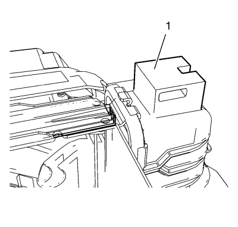
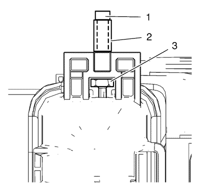

Reparación del pasador de montaje inferior y superior del radiador
Procedimiento de reparación
Nota: En este vehículo, el sistema de reparación del pasador de montaje sólo se aplica a la parte inferior del radiador, no a la superior.
Nota: Si el radiador tiene fugas, sustitúyalo. Consultar Sustitución del radiador .
- Someta el sistema de refrigeración a una prueba de presión. Consultar Pruebas de fugas del sistema de refrigerante .

- Rectifique la superficie partida (1) con una herramienta adecuada.
- Perfore un orificio duradero en el centro de la superficie rota, con una broca de 6 mm (0,24 pulg.).

- Instale el pasador de montaje nuevo del radiador (2).
Atención: Consulte Atención - fijaciones en la sección Prólogo
| | Nota: La longitud del perno no debe superar los 35 mm (1,38 pulg.). |
| • | Introduzca el pasador de montaje (2) del radiador con el perno (1) y apriételo a 5 N·m (45 lib. pulg.). |
| © Copyright Chevrolet Europe. All rights reserved |